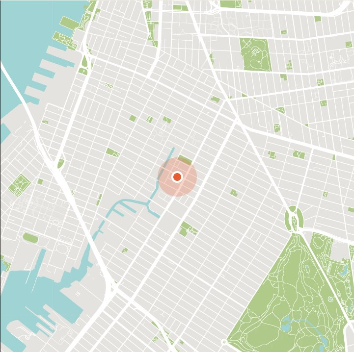
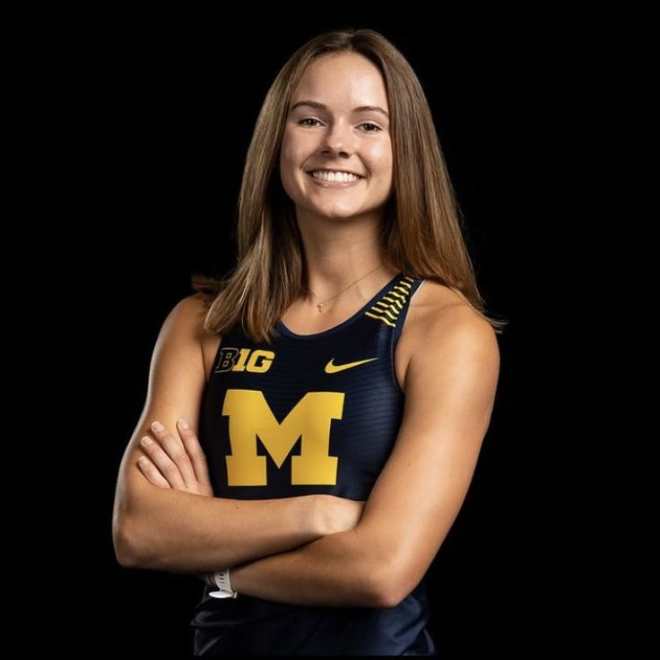
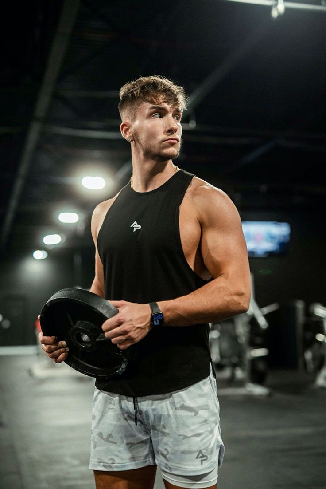

01
Curated, not sold to us.
Every brand we carry has been tested, worn and vouched for by our team. If it doesn’t perform on a Glasgow winter long run, it doesn’t hit our wall.
Home / About
We opened Paceline in 2015 with one goal — to build the running shop we’d always wanted. A decade in, we’re still hand-picking every shoe, every layer and every accessory for runners just like us.
01 · Why we exist
If your aim is 5K or 26.2 miles, on road or trail, we’re here to prepare, empower and equip you — from your first training run through to race-day. Our tried-and-tested range covers road, trail, track and field, apparel and accessories, with zero compromise on performance or style.
Paceline is small and independent, but the community around it is anything but. We run our own weekly club, host free gait analysis, and partner with local charities so 20% of profits from kids’ kits go to Girls Run Glasgow.
Whatever mile you’re on, we want to be your shop. Come say hello.
— Rae & Jamie, Founders
02 · What we stand for
Every brand we carry has been tested, worn and vouched for by our team. If it doesn’t perform on a Glasgow winter long run, it doesn’t hit our wall.
Free gait analysis, weekly run clubs, and race-day support. Come in for shoes, stay for the miles. Ask for Rae — she’ll get you laced up right.
From how we lay out the store to how we pack an order — the small stuff matters. We’ve spent a decade sweating the details so your run is smoother.
03 · Ten seasons in
Rae opens a 40-sqm shop on Great Western Road with 3 shoe brands and a lot of hope.
Free gait analysis and injury consults every Saturday — booked out in weeks.
Every Wednesday, rain or shine. Started with 6 runners, now averages 80+.
Twenty seasons, still hand-picking every product. Same team, same goal.
04 · Come say hi

05 · Meet the founders

12x sub-3 marathonerFounder & Head Buyer
A former GB triathlete turned shopkeeper. Rae hand-picks every shoe on the wall and still runs the Wednesday club — sub-3 marathoner, twelve times over.

10+ years coachingCo-Founder & Coach
Sports physio and coach with decade in the sport. Runs our free Saturday clinic, coaches the club, and knows more about your gait than you do.
Ready to run?